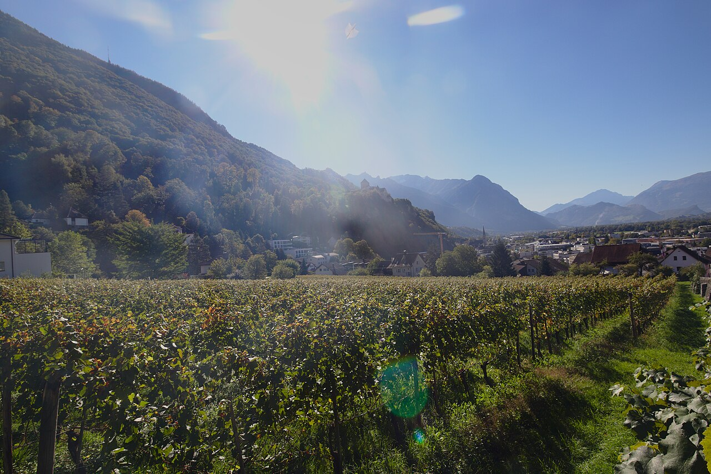

Gyors adatok
Földrajz

Liechtenstein a Rajna völgyében fekszik, az Alpok keleti részén. Nyugatról Svájc, keletről Ausztria határolja. Az ország mindössze 160 km² — nagyjából akkora, mint egy nagyobb magyar város — mégis hegyvidéki és síkvidéki tájak váltakoznak: a lakosság nagy része a Rajna menti völgyben él, a többiek hegyi falvakban, például Malbunban.
Az országot 11 önkormányzat (község) alkotja, ezek közül a legnagyobb Vaduz, egyben a főváros is.
Látnivalók

Vaduz vára
A hercegi család lakhelye, a város fölé magasodó szikláról néz le Vaduzra. Az ország legismertebb jelképe.

Vaduz óvárosa
Szűk, színes utcácskák a fővárosban — sétára, fagyira és képeslap-vásárlásra tökéletes hely.

Gutenberg-vár
Balzers városa fölött álló középkori vár — ma múzeum, gyönyörű kilátással a Rajna völgyére.

Parlament Vaduzban
A Landtag (parlament) modern épülete a főváros szívében áll, a vár és a kormányépület közelében.
Történelem röviden
- 1699 / 1719 — a Liechtenstein család megszerzi Vaduz és Schellenberg uradalmait, ezzel létrejön a Liechtensteini Hercegség a Német-római Birodalmon belül.
- 1806 — a hercegség csatlakozik a Rajnai Szövetséghez és szuverén, azaz önálló állam lesz.
- 1868 — Liechtenstein feloszlatja hadseregét, azóta nincs katonasága.
- 1921 — új alkotmány: alkotmányos monarchia, a herceg és a parlament együtt kormányoz.
- Ma — II. János Ádám herceg az államfő, az ország az EGT és a schengeni övezet tagja.